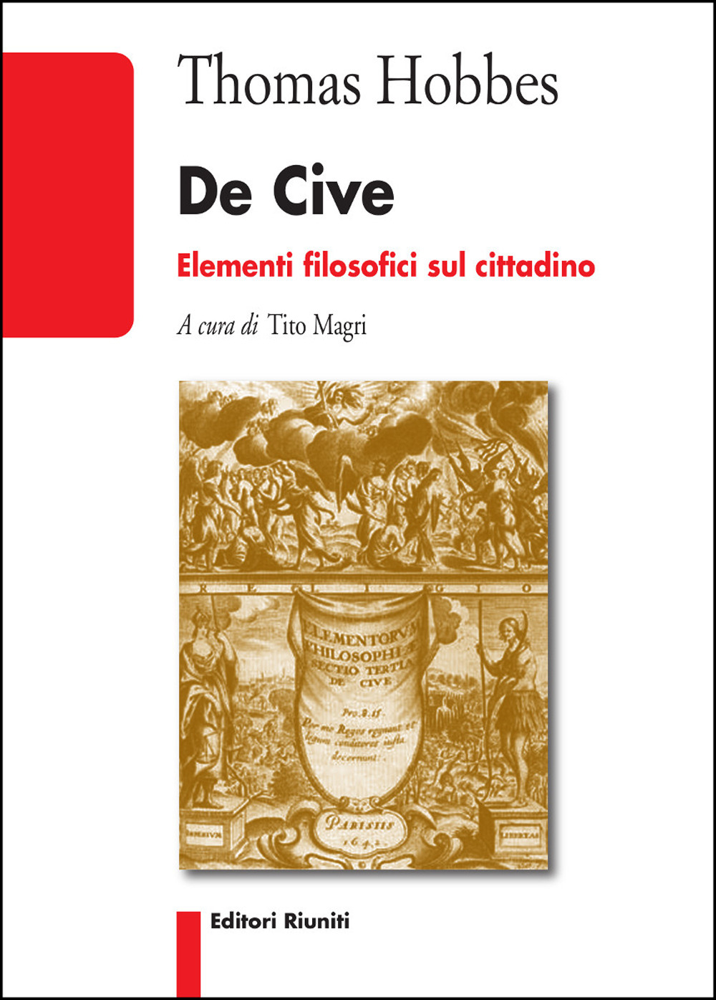
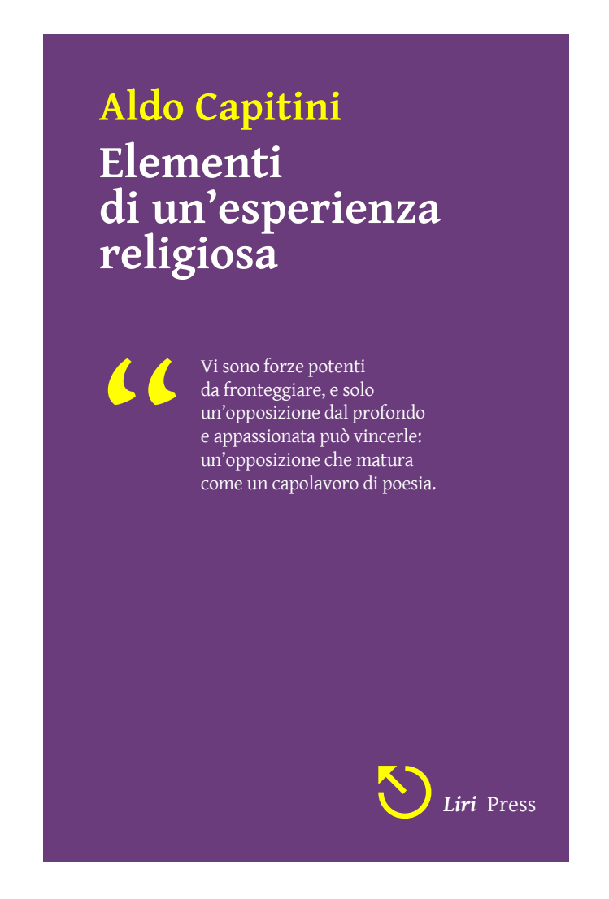
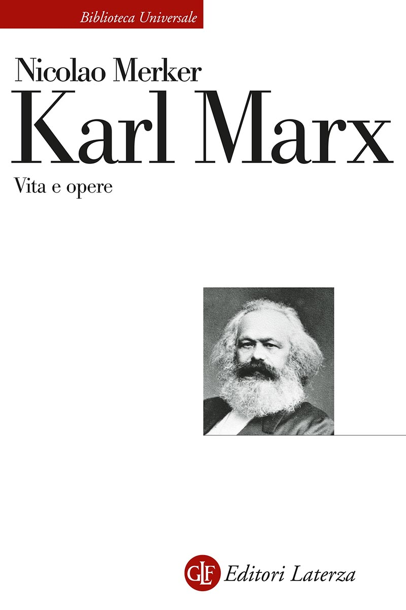
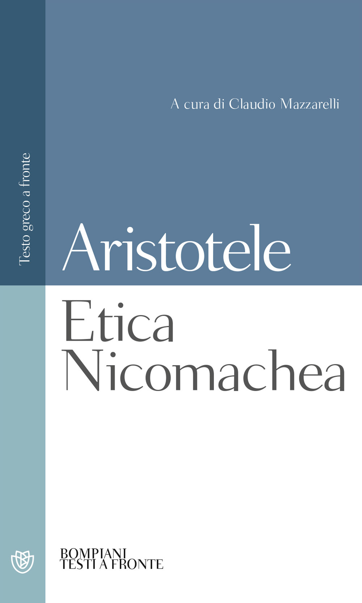

38:55 · 19 OPERE
Modernità e modelli di condizionamento sociale.
Il filo del discorso
Il relatore legge un proprio testo intitolato Modernità e modelli di condizionamento sociale e si domanda perché le società fatichino a immaginare rapporti diversi da competizione, dominio e interesse. La tesi sviluppata è che il linguaggio e la propaganda possano rendere naturale un ordinamento, fino a indurre le persone a riprodurlo nelle relazioni con gli altri e con se stesse. Orwell, Kierkegaard, Platone e Fromm accompagnano il passaggio dalla conformità sociale al problema della libertà morale. Un ricordo personale sulla massima di Hillel introduce la distinzione fra avere cura di sé e ridurre ogni scelta al proprio vantaggio. Capitini serve poi a richiamare il valore della persona contro la sua trasformazione in una cosa. Nella sezione sul diritto il giovane Marx e la lettura di Nicolao Merker offrono esempi della tensione fra interesse dei proprietari, bisogni comuni e autorità delle norme. La parte conclusiva contrappone la scelta etica alla partecipazione ai meccanismi di sopraffazione, richiamando la Repubblica, l’Etica Nicomachea e il frammento di Eraclito su Ermodoro. La figura di Cappuccetto Rosso fornisce infine una metafora della domanda razionale che svela un travestimento. Le generalizzazioni sulla modernità e sulla natura umana restano interpretazioni del relatore, distinte da diagnosi cliniche o da una dimostrazione storica universale.
I libri nel discorso

Candido o l’ottimismo
Identificazione probabile
Copertina: Feltrinelli · Universale Economica I Classici · 2013 · traduzione di Stella Gargantini
Immagine autentica dell’opera, controllata visivamente; l’edizione di riferimento non è attribuita al filmato.
Pangloss e migliore dei mondi possibili: allusione riconoscibile al Candido, titolo non pronunciato.
Passaggio 1:35 ↗ · Fonti e libro ↗
1984
Copertina: Newton Compton · edizione illustrativa
George Orwell e 1984 espliciti nel discorso sulla manipolazione del linguaggio.
Passaggio 3:11 ↗ · Fonti e libro ↗
De cive. Elementi filosofici sul cittadino
Identificazione probabile
Copertina: Editori Riuniti · 2019
Copertina autentica dell’edizione di riferimento, controllata visivamente. Non identifica l’esemplare letto o citato nel video.
Hobbes e homo homini lupus richiamati: formula presente nella dedicatoria del De cive, titolo non pronunciato.
Passaggio 19:31 ↗ · Fonti e libro ↗
La malattia mortale
Copertina: SE · Conoscenza religiosa 41 · a cura di Cornelio Fabro, ristampa di riferimento
Immagine autentica dell’opera, controllata visivamente; l’edizione di riferimento non è attribuita al filmato.
Kierkegaard e malattia mortale espliciti, intesa come disperazione in senso teologico-filosofico.
Passaggio 10:31 ↗ · Fonti e libro ↗
Gorgia
Copertina: Gorgia, Bompiani, giugno 2001, a cura di Giovanni Reale, testo greco a fronte, 384 pagine, ISBN 9788845291111. Copertina ufficiale blu, bianca e verde acqua con titolo e autore; edizione di riferimento non identificata nel video.
Immagine autentica dell’opera, controllata visivamente; l’edizione di riferimento non è attribuita al filmato.
Platone, Gorgia e tiranno Archelao espliciti; racconto del dialogo in 470d–471d.
Passaggio 11:06 ↗ · Fonti e libro ↗
Psicanalisi della società contemporanea (The Sane Society)
Identificazione probabile
Copertina: Copertina inglese The Sane Society, Routledge Classics, 2002, seconda edizione, 424 pagine nel catalogo editoriale, ISBN 9780415270984. Originale Rinehart 1955; prima edizione italiana Edizioni di Comunità 1960. Il 1964 pronunciato nel video può indicare una successiva edizione italiana.
Copertina autentica Routledge, tessitura verde e banda rossa con Fromm e titolo inglese. L’indice identifica il tema in Can a Society be Sick? The Pathology of Normalcy. La copertina inglese del 2002 non è attribuita all’edizione italiana del 1964.
La frase sulla natura umana come una fra più manifestazioni, anche patologiche, corrisponde a The Sane Society, capitolo 2; titolo non pronunciato in forma esatta.
Passaggio 13:17 ↗ · Fonti e libro ↗
La fattoria degli animali
Copertina: A. Mondadori Scuola · edizione scolastica
Titolo e massima sugli animali uguali e più uguali espliciti.
Passaggio 17:45 ↗ · Fonti e libro ↗
Pirqè Avòt (Massime dei Padri)
Copertina: Copertina Massime dei padri. Pirké Avòt. Con traduzione a fronte, commenti, schede tematiche e racconti, Giuntina, Fuori collana, 2021, illustrazioni di Boris Shapiro, introduzione di Shalom Hazan, prefazione di Riccardo Di Segni, ISBN 9788880579014.
Copertina autentica illustrata con albero, figure di maestri e grande titolo ebraico Pirqè Avòt; immagine intera della scheda ISBN. Il titolo italiano non è sovrapposto artificialmente alla grafica. Hillel è autore della massima citata, non dell’intero trattato; Shapiro è illustratore, non autore antico. L’edizione moderna non viene attribuita al contributo.
Massima di Hillel riconoscibile in Pirkei Avot 1,14; il titolo della raccolta non è pronunciato.
Passaggio 18:28 ↗ · Fonti e libro ↗
Elementi di un’esperienza religiosa
Copertina digitale: Elementi di un’esperienza religiosa: Copertina dell’edizione digitale Liri Press, Officina di controeditoria, 2012, PDF di 121 pagine che dichiara di riprodurre la seconda edizione Laterza del 1947. Prima edizione dell’opera: Laterza, Bari, 1937; nessun ISBN identificato per questa edizione digitale.
Copertina autentica intera, viola con nome giallo, titolo bianco, citazione e marchio Liri Press. Prima pagina del documento. Il passo citato è stato letto a pagina 63 del PDF; questa numerazione non viene trasferita alla prima Laterza o alla ristampa Cappelli. La fonte annuncia una riproduzione della seconda edizione, non si tratta di una copertina Laterza del 1937.
Aldo Capitini e titolo riconoscibile; uomini considerati cose e uccisione come oggetto caduto, riscontro a pagina 63del PDF Liri Press.
Passaggio 20:37 ↗ · Fonti e libro ↗
Vangelo secondo Giovanni
Identificazione probabile
Copertina del volume completo: San Paolo, 2014 · Nuova Versione dai Testi Antichi · edizione di riferimento
Vangelo secondo Giovanni è un libro della Bibbia. L’immagine mostra il volume completo San Paolo di riferimento, non un’edizione autonoma del singolo libro e non una versione identificata nella citazione.
Gesù e perché mi percuoti: passo identificato in Giovanni 18,23, senza titolo del Vangelo pronunciato.
Passaggio 21:58 ↗ · Fonti e libro ↗
Dibattiti sulla legge contro i furti di legna
Raccolta: Scritti politici giovanili: Fotografia della copertina di Scritti politici giovanili, Karl Marx, cura di Luigi Firpo, Einaudi, Biblioteca di cultura politica e giuridica 4, 1950, 535 pagine. Raccolta che contiene lo scritto, non volume autonomo del singolo articolo; nessun ISBN retroattribuito all’edizione del 1950.
Fotografia autentica della copertina dell’esemplare Einaudi 1950, beige e grigia, con nome Karl Marx, titolo e struzzo editoriale. Provenienza: Laboratorio del libro tramite IBS, codice commerciale 2570310170529, che non è un ISBN. Il riferimento riguarda il singolo articolo, distinto dal volume che lo contiene. L’esemplare del relatore resta non identificato.
Dibattito del Parlamento renano, furti di legna, raccolta e giovane Marx descritti esplicitamente.
Passaggio 24:45 ↗ · Fonti e libro ↗Il manifesto filosofico della scuola storica del diritto
Identificazione probabile
Raccolta: Scritti politici giovanili: Fotografia della copertina di Scritti politici giovanili, Karl Marx, cura di Luigi Firpo, Einaudi, Biblioteca di cultura politica e giuridica 4, 1950, 535 pagine. Raccolta che contiene lo scritto, non volume autonomo del singolo articolo; nessun ISBN retroattribuito all’edizione del 1950.
Fotografia autentica della copertina dell’esemplare Einaudi 1950, beige e grigia, con nome Karl Marx, titolo e struzzo editoriale. Provenienza: Laboratorio del libro tramite IBS, codice commerciale 2570310170529, che non è un ISBN. Il riferimento riguarda il singolo articolo, distinto dal volume che lo contiene. L’esemplare del relatore resta non identificato.
Critica di Hugo, ogni esistenza come autorità e diritto della forza arbitraria: testo identificato nell’articolo del 1842, senza titolo pronunciato.
Passaggio 26:14 ↗ · Fonti e libro ↗
Karl Marx. Vita e opere
Identificazione probabile
Copertina: Copertina Laterza, Biblioteca Universale Laterza 720, edizione 2022, 266 pagine, ISBN 9788858147306; titolo Karl Marx, sottotitolo Vita e opere. La scheda editoriale documenta la precedente uscita del 2010.
Copertina autentica Laterza, bianca con testata rossa della Biblioteca Universale, autore e titolo, piccolo ritratto di Marx e marchio GLF. La corrispondenza testuale rende probabile il riferimento alla biografia di Merker, non alla biografia di Franz Mehring. L’edizione 2022 illustrata non viene attribuita al video.
Cognome incerto nella trascrizione automatica, ma sequenza e citazioni coincidono con l’estratto editoriale di Karl Marx.Vita e opere di Nicolao Merker; identificazione probabile.
Passaggio 26:10 ↗ · Fonti e libro ↗
La Repubblica
Copertina: Laterza · La Repubblica · edizione con testo a fronte di riferimento
Immagine associata all’ISBN di riferimento e controllata visivamente; edizione e traduzione non identificate come quelle citate o lette nel video.
Politeia esplicita e virtù senza padrone: libro X, 617e nel mito di Er.
Passaggio 29:14 ↗ · Fonti e libro ↗
Etica Nicomachea
Copertina: Bompiani, Testi a fronte, settembre 2000, 512 pagine, a cura di Claudio Mazzarelli, testo greco a fronte.
Immagine autentica dell’opera, controllata visivamente; l’edizione di riferimento non è attribuita al filmato.
Aristotele e titolo espliciti, passo sulla scelta di agire o non agire in III5,1113b.
Passaggio 29:25 ↗ · Fonti e libro ↗
Frammenti
Copertina: BUR · a cura di Francesco Fronterotta, testo greco a fronte, 2013
Immagine autentica dell’opera, controllata visivamente; l’edizione di riferimento non è attribuita al filmato.
Eraclito, Efesini ed Ermodoro espliciti: frammento DK 22 B 121.
Passaggio 31:24 ↗ · Fonti e libro ↗
Cappuccetto Rosso
Versione di Perrault: Cappuccetto Rosso: Copertina della versione attribuita a Charles Perrault, Giunti, Morbide fiabe, 19 luglio 2017, 64 pagine, ISBN 9788809856936. Il contributo cita la fiaba senza determinare la redazione: questa è una edizione illustrativa dichiarata.
Copertina autentica Giunti, verde con bambina incappucciata e lupo, nome Charles Perrault e marchio dell’editore. Il finale non viene ricostruito arbitrariamente secondo i Grimm o Perrault, perché il relatore non lo precisa.
Titolo esplicito, lupo travestito da nonna e domande della bambina; versione non precisata.
Passaggio 33:57 ↗ · Fonti e libro ↗
Amleto
Identificazione probabile
Copertina: BUR · 2022 · traduzione di Rocco Coronato · illustrazioni di John Austen
Immagine autentica dell’opera, controllata visivamente; non identifica l’edizione usata nel video.
Polonio e metodo nella follia: Amleto II, 2 identificato, titolo non pronunciato.
Passaggio 36:42 ↗ · Fonti e libro ↗
I vestiti nuovi dell’imperatore
Identificazione probabile
Copertina: Rizzoli, 2014 · eBook di riferimento
Re nudo che si pretende vestito: allusione finale alla fiaba di Andersen, senza titolo o autore pronunciati.
Passaggio 38:11 ↗ · Fonti e libro ↗